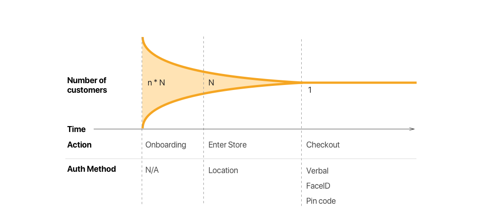

For our first week into a sprint cycle for the summer, we decided to shift focus to merchants, and the physical store experience. We’re trying out the Google Design Sprint methodology, a one-week intensive, that focuses on a specific problem on Monday, goes through narrowing the problem, ideating, prototyping, and testing, all by Friday. Our review of the process will follow at the end, but this is where we started out.
Our initial question developed out of an interview with NuData regarding implementing Continuous Authentication in a physical store. While discussing the hindrances to how CA can be implemented in a physical store, one issue that came up was a completely social idea. NuData’s tech can very much work while people visit a physical store, but some merchants worried about dividing their customers into a "two class society" - those that wait in line, and those that preorder on an app. We keep going back to the Starbucks app, as it has been wildly successful, and a few of our team members are very familiar with it. (** a bit too familiar maybe?) At Starbucks, they may be worried about the varying experience of those waiting in line getting a second-class experience if app users are prioritized too much. So we framed our questions thus:
How can a Merchant serve a growing number of continuously authenticated users, without hurting their legacy (cash and card) population?
During the initial mapping process, we identified 3 key areas to narrow down our focus as to what type of physical payment experiences we are looking at:p>
How do we onboard users as seamlessly and delightfully as possible?
- Business value to Mastercard
We chose high-volume commodity purchases, "top-of-wallet" buys. People have to buy boring things all the time: gas, toilet paper, fast food. And when they do, they use the first card in their wallet without thinking about it. Since a significant portion of Mastercard’s revenue is from transaction fees, this is a meaty area for them.
- Opportunity for Continuous Authentication (CA) to enhance the Customer Experience
Some of the benefits CA can provide are reduced fraud, potential for higher volume, speed of transaction increase, better UX, increased brand loyalty, etc.
- Reducing Social Friction
As mentioned earlier, we want to have a cohesive experience for both customers that are using a CA system, and ‘legacy’ customers. Our design should reduce awkwardness, hassle and a sense of division between people, either cashiers and customers, or peer-to-peer.
To narrow down which contexts we were going to design for, we listed out all of the domains we thought could be interesting, focusing on high-volume commodity buys. Using the criteria from above, we rated every domain 1-5 by pure gut instinct. For example, looking at potential gains for Speed of Transaction, Restaurants are rated high because usually the server has to make multiple trips to deliver the bill and complete the transaction. The payment experience is a small, but significant part of the overall experience. Hotels are rated low because the customer has to check in at the desk anyway, and over the full experience of staying there, the payment portion is a tiny part.
After taking some time individually to compile notes and brainstorm, we jumped into a team favorite: Crazy Eights - eight design sketches in eight minutes. This took a couple passes, as we all had slightly different focuses (which is the point of crazy eights) but every idea was met with the realization that these experiences we sketched were really no better than just using credit cards. As we discussed, the frustration built and built, and lead to many strong debates about the merits of each, plus the added stress while realizing that this, challenge, with the constraints we gave ourselves (shouldn’t require the merchant to buy new hardware), may just be too difficult.
Through this, we realized the original question needed to be changed. We realized that the problem was not the difference between customers of different payment and authentication methods. Our nearsighted focus on Starbucks and its app was a misnomer that got us stuck in the mud for a bit. The real focus should be on how can the payment experience (swiping and waiting) disappear. We love Uber as a physical payment experience. The experience basically disappears and happens totally in the background. So to reframe, let’s change the question:
How can the payment experience disappear, without startling customers?
We began thinking of the experience a regular customer of an establishment has, let’s use a bar as an example. Once finished with their food or drink, they turn to the bartender, say "put this on my tab", and leave. The payment is handled by the establishment. It’s an elegant and hassle-free experience. Can CA bring that kind of experience to anyone?
Physical Space is Hard!
Extra Hardware
Not ANOTHER App!
It seems obvious, but no one wants to download ANOTHER payment app for a generically boring thing like authentication. We’re planning on testing people’s native bank apps (which seem likely that people already have), a standalone Mastercard app (which may be a hard sell to download), and merchant apps. Large corporations (Walmart, Target, Starbucks) have some successful apps, but this doesn’t scale well beyond them.
We summed this idea up in a Pain Threshold diagram. Credit cards have a baseline of low pain. People are used to it and it’s constant. A custom Continuous Authentication app could ideally be easier, but initially there’s a large pain-in-the-butt threshold of downloading a specific app. An externalized solution around this may be the card-issuer’s app. Many people have bank apps to check the balance on their credit card. If we can use this, we can get over the initial hassle of downloading another app.
How can you identify who is in your store?
From a tech point of view we see three different steps to identifying your customer.
Step one - Includes all the customers that have signed up for your store via this magical Continuous Auth app. For a big retailer let’s call this 50,000 customers signed up.
Step two - We identify who is in the store and likely to try to checkout right now. GPS is great at the scale of a few meters, and we can assume if they’re within a geocached area of your store they’re in a list of potential shoppers. Let’s say this is a couple dozen - 24 people in store that may be trying to buy something right now.
Step three (the hardest) - Now we have to whittle down who is "next in line". Out of those 24 people that can potentially pay with CA, who in the digital system is who in the meatspace of the store, and how do you identify who is who. This actually is the crux of the issue. GPS only gets you into the store, but customer must identify themselves to the cashier. Without a sophisticated sensor based or computer vision system, it’s hard to know who is who. How can a person identify themselves in a space easily and securely?
One quick aside:
While researching Uber and Google Hands Free we’ve come up with the realization that your name can be used roughly like a public key in cryptography in a physical space. When getting in an Uber, the driver verifies your name. This is a simple factor, but it’s layered on top of the factors of physical space. Even if other people are around, you can easily identify and verify who is who by just asking for your name. Can this be leveraged as in this context? Rabbit hole to asymmetric cryptography
Credit cards actually work really well!
This leads us back to the appreciation of a physical item we carry around. We have been using them for over 70 years and they’re really quick. The exchange of taking out the card, swiping or chip and pin, and getting your goods is a mundane and quotidian thing. But everyone knows how to do it and it’s actually really quick. Ain’t nothing like plastic.
Where do we go from here?
We’re going to look at current solutions in the market in major retailer apps. How are Walmart, Dunkin Donuts, Target, Shake Shack, and other companies providing value to users through their apps?
We are designing multiple ways in which we can test the question introduced earlier: How can a person identify themselves in a space easily and securely?
Or more broadly, how exactly does the in-store experience work for a person Continuously Authenticated?
Prototype details:
We're creating:
- The CA onboarding experience that the consumer goes through via different means (e.g a bank app, Mastercard app etc);
- The store experience where the customer interacts with the merchant (focusing on a coffee shop for our first prototype);
- The screens that the user interacts with at time of checkout.
We aim to begin user testing by mid next week. We have some ideas for creating an immersive store experience we’re very excited about - keep an eye out for what we get up to next week!
Review of the Google Sprint Methodology
In the Spring, we used elements of the GS framework during past Sprints. However, we never had time for the full deal. Now that Summer has begun, we have all the time, so much in fact, it’s dangerous, and to ensure that we don’t waste it, we’ve wanted to attempt a GS in earnest to see if it works as advertised. We’ve found overall that it’s a helpful framework, but we hit some snags. One, we had a short week (Monday being off) and it definitely requires 5 days. Two, our question and problem space were too broad, GS works much better for a narrower topic. We’ve extended our sprint on this until next week, since it will require more development and we need to push both the merchant and customer experience simultaneously.
GS really helped with timing by utilizing windows of time to get things done. In the future, we will continue to borrow the good parts, but we won’t be doing another ‘by the book’ GS. We found that having a defined schedule planned out in advance really helps us during the day, and keeping us on track. Also, afternoons bring a hit to productivity, so in the future we’ll aim to frontload all design/creative work to the mornings, and complete administrative and other non-critical tasks in the afternoon.